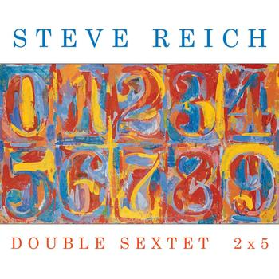

Steve Reich by iCQ Project
Блин, круто как.
Блин, круто как.

Очень приятный Охуенный альбом!

Клевые какие портреты!
Клевая тема)
Альбом весь такой, но этот трек и еще City Lines нравятся больше всего.
Вообще, все этюды очень клевые!

Клевые картинки!

Очень интересная интерпретация!

Хорошее кино! Лучше смотреть на английском.